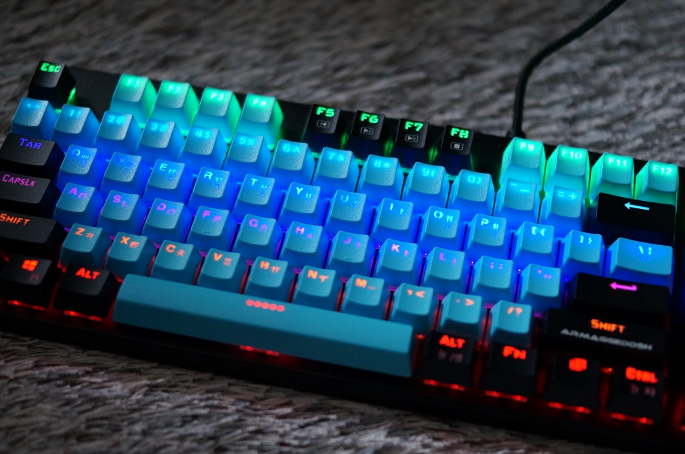
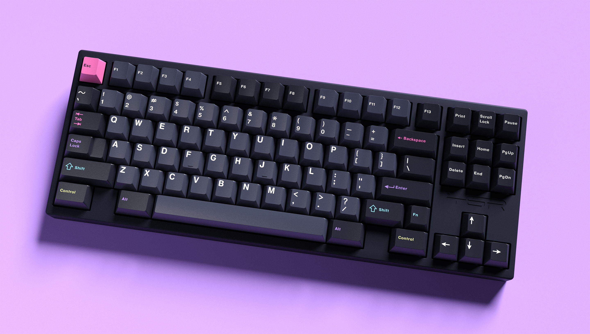
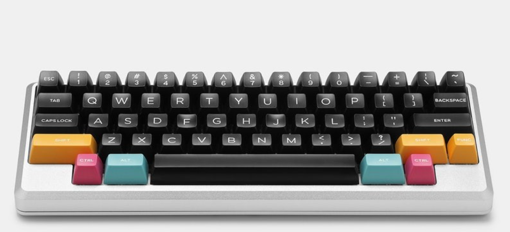
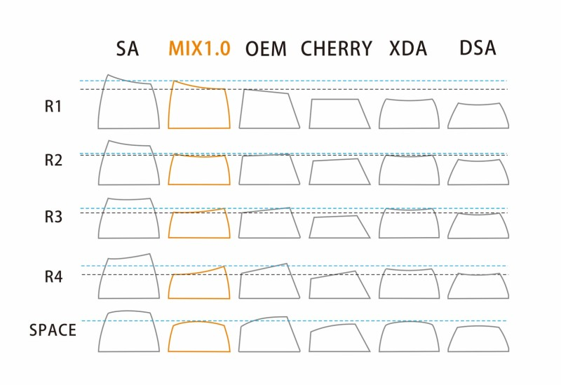

특징
 출처) https://ministerfe.tistory.com/20
출처) https://ministerfe.tistory.com/20
-가벼운 무게와 소재로 인한 가벼운 타건음
-두께가 두꺼워질수록 (1.0mm --> 1.5mm) 바둑돌 혹은 조약돌 두드리는 소리가 발생한다.
-PBT에 비해 마모가 빠르게 진행되며, 표면 끈적임 발생.
-PBT에 비해 색감 표현에 탁월하다.
일반 ABS
 일반적으로 rgb 투과 제품에 사용된다.-일반적으로 저가형 / 중저가형 모델에 장착됨.
-두께가 얇아 속 빈 소리가 많이 나고, 날카로운 소리.
-내구성이 낮고 뜨거운 물에 잠시 넣어두면 쉽게 변형할 수 있음.
-실크 각인 / 레이저 각인 방식을 많이 사용한다.
-이중 사출 방식을 이용하여 RGB 모델에 기용하기도 함.
-열에 매우 민감하므로 염료를 고온으로 가열한 뒤 승화시켜 각인하는 염료 승화 방식은 이용하지 못한다.
손쉽게 구할 수 있으며, 다른 특징 있는 ABS보다 싸다.
GMK
 2년째 배송되지 않는 제품-Cherry사의 금형을 이용해 제작되는 이중사출 ABS키캡.
-두꺼운 두께 덕에 듣기 좋은 울림 소리가 발생.
-내구성이 낮고 뜨거운 물에 잠시 넣어두면 쉽게 변형할 수 있음.
-이중 사출 방식을 통해 반영구적으로 각인 유지
-색감 표현이 가장 좋았으며, 고급스러운 타건음과 타건감을 준다.
-하지만, 구매 후 1년 ~ 2년 뒤에 받아볼 수 있으며 가격 또한 매우 비싸고 최근 품질 이슈가 발생하였다. 각인하는 염료 승화 방식은 이용하지 못한다.
도미키
-SA 프로파일과 토프레 키캡을 제작했던 중국 회사.
-준수한 두께, 품질로 많은 사랑을 받고 있다.
-최근에는 SA 프로파일뿐만 아니라 체리 프로파일까지 제작 중.
-이중사출로 반영구적으로 각인 상태 유지.
SA 회사들(맥스키, SP 등)
-SA 프로파일을 전문적으로 생산하는 맥스키, SP 사가 있다.
-일반적인 키보드의 키캡보다 약 2배 정도 높고, 1.2배 정도 넓다
-부피가 커진 만큼 울림통이 커져서 타건음이 매우 크게 변화한다
-호불호가 크게 갈리며, 일반적으로 팜레스트 없이 사용하면 손목에 큰 부담이 가기 때문에 반드시 팜레스트가 필요하다.
>GMK / KAT / SA 프로파일 비교